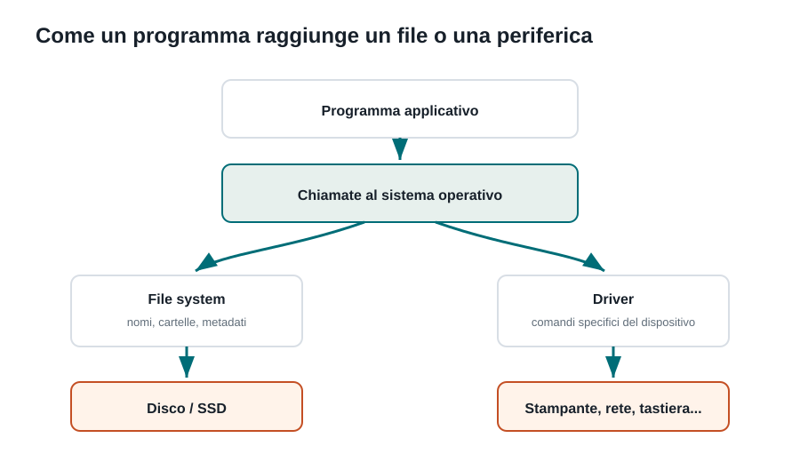

Capitoletto
File e periferiche
Come il sistema operativo organizza i dati persistenti e permette ai programmi di usare dispositivi diversi senza conoscere l'hardware nel dettaglio.
Obiettivi della lezione
- Distinguere file, directory e file system.
- Capire a cosa servono metadati e percorsi.
- Spiegare il ruolo di driver, buffer, cache e interrupt.
- Descrivere come un programma accede a file e periferiche.
File, directory e metadati
Un file conserva dati in modo persistente: resta disponibile anche dopo lo spegnimento del computer. Una directory organizza file e altre directory in una struttura ordinata. Il sistema operativo non memorizza solo il contenuto, ma anche metadati: nome, dimensione, data, proprietario, permessi e posizione dei blocchi su disco.
| Elemento | A cosa serve | Esempio |
|---|---|---|
| File | Contiene informazioni. | relazione.txt, foto.jpg, programma.exe |
| Directory | Organizza file e sottocartelle. | Documenti, Immagini, Progetti |
| Metadati | Descrivono e gestiscono il file. | Dimensione, data modifica, permessi |
File system
Il file system stabilisce come i dati vengono organizzati sul dispositivo di memorizzazione. File system diversi scelgono strutture e regole diverse per compatibilità, prestazioni, sicurezza o affidabilità.
| File system | Dove si trova spesso | Caratteristica utile |
|---|---|---|
| NTFS | Windows | Permessi avanzati e journaling. |
| ext4 | Linux | Affidabile e diffuso su server. |
| APFS | macOS | Ottimizzato per dispositivi Apple moderni. |
| exFAT | Chiavette e dischi esterni | Compatibile con sistemi diversi. |
Dal programma alla periferica

Quando un programma vuole leggere un file, non parla direttamente con il disco. Fa una richiesta al sistema operativo. Il sistema controlla permessi, file system, cache e driver, poi restituisce i dati. Lo stesso principio vale per stampanti, tastiere, webcam e rete.
Driver, interrupt, buffer e cache
| Meccanismo | Funzione | Esempio |
|---|---|---|
| Driver | Traduce richieste generiche in comandi specifici del dispositivo. | Driver della stampante. |
| Interrupt | Avvisa la CPU quando una periferica richiede attenzione. | La scheda di rete segnala dati ricevuti. |
| Buffer | Conserva temporaneamente dati in transito. | Coda di stampa. |
| Cache | Tiene copie veloci di dati usati spesso. | File letto di recente mantenuto in RAM. |
Questi meccanismi servono perché le periferiche hanno velocità diverse dalla CPU. Senza buffer e interrupt, il processore perderebbe tempo ad aspettare dispositivi più lenti.
Esempio: stampare un documento
- L'applicazione chiede al sistema operativo di stampare.
- Il sistema verifica permessi e stampante disponibile.
- I dati vengono messi in una coda di stampa, cioè un buffer.
- Il driver traduce il documento nel formato capito dalla stampante.
- La stampante segnala avanzamento o errori al sistema.
Esercizi guidati
- Scegli un file sul tuo computer e individua almeno quattro metadati.
- Spiega perché una chiavetta USB usa spesso exFAT.
- Descrivi cosa succede, a grandi linee, quando salvi un documento.
- Fai un esempio di buffer nella vita quotidiana e collegalo all'informatica.
Domande con risposta semplice
Che cos'è un file system?
È il modo con cui il sistema operativo organizza file, cartelle e metadati su un dispositivo.
A cosa serve un driver?
Serve a controllare una periferica specifica offrendo al sistema operativo un modo ordinato per usarla.
Perché esistono buffer e cache?
Per ridurre attese e rendere più efficiente il passaggio dei dati tra CPU, memoria e dispositivi.
Per ripassare
Prima osserva il diagramma, poi leggi la spiegazione. Se riesci a rispondere alle domande finali senza copiare le frasi del testo, hai capito davvero l'argomento.